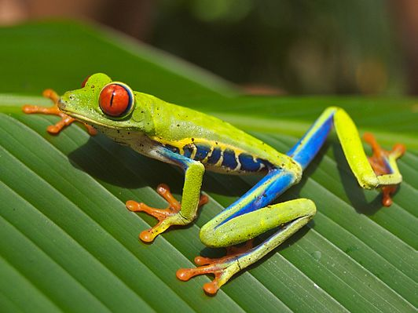

Kikker

Kikkers (Anura) zijn een van de drie groepen van amfibieën, naast de salamanders (Caudata) en de wormsalamanders (Gymnophiona).[2] Kikkers zijn hiervan verreweg de grootste groep; van de ongeveer 7790 soorten amfibieën behoort grofweg 88% tot de kikkers. Er zijn tegenwoordig ruim 6860 verschillende soorten kikkers beschreven.[3] Kikkers hebben een vrijwel wereldwijde verspreiding en leven in sterk uiteenlopende habitats. Kikkers behoren tot de gewervelde dieren, ze hebben vier poten maar geen staart en verschillen hiermee van de meeste andere amfibieën. Alle kikkers hebben een afgeplat, peervormig lichaam en uitpuilende ogen. De kop en bek zijn breed, de lange achterpoten zijn sterk gespierd en goed ontwikkeld. Kikkers zijn de enige dieren die een kwaakblaas hebben en hiermee soortspecifieke geluiden maken om elkaar te lokken. Net als andere amfibieën zijn kikkers koudbloedig, hierop is zowel de bloedsomloop als de ademhaling aangepast. Een aantal soorten houdt een zomerrust of winterslaap om erg warme respectievelijk koude jaargetijden te doorstaan.
Bron: Wikipedia